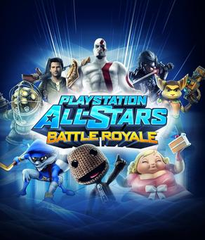
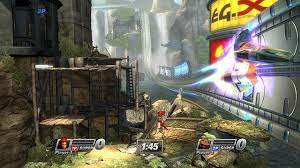

Play Station All Stars Battle Royale 2 and How it could be good Part 1: Characters Sebastian Garda
Play Station All Stars Battle Royale is a game with an incredible premise that just barely misses the mark
due to a few missteps. I wan't a sequel so bad, and now that Smash Brothers Ultimate has finally finished
it's dlc character additions I think now is the perfect time to consider what a potential sequel to this
unfortuante flop could change to make it a perfect competitor in the platform fighter genre. For one I think
the most obvious mistake the game made was its roster. So many odd choices and omissions make it much less appealing
than the Smash roster. Using DmC Dante as opposed to regular Dante for example, or neglecting Playstation icons like
Crash and Spyro. For the most part I'm not actually all that mad with what's currently there (except DmC Dante swap him
out), but there are so many cool additions that could be added. Any Fromsoftware representation would be first on my list
and the most obvious from those games is the Hunter from Bloodborne seeing as that game is still PS4 exclusive. Again I'd
add Crash and Spyro as I think they're super iconic to the playstation brand. Pyramid Head would be a super fun horror rep,
something smash sorely lacks, and Sub Zero and Scorpion would be cool western fighting game reps. I also think that just
because smash already has a character in their game doesn't mean PSASBR2 couldn't use them as well. Snake, Cloud and Sephiroth,
and Sora are all huge characters on Sony platforms. I'd also say an Atlus rep would be cool, but it doesn't have to be Joker.
I'd be fine with the protagonists from either P3 or P4 as well or even the Shin Megami Tensei 3 or 5 main character.
The coolest thing about Smash is also the fact that they pull from other companies to complete their roster. I know it's a
farfetched idea but it'd be so cool for Sony to get Microsoft characters in PSASBR2. A Killer Instinct character, Master Cheif,
Conker or any other big Microsoft character would feel like such a cool achievement. Even beyond that could you imagine if
Nintendo allowed one of their characters in the game? I know it's far fetched but Link was a character in Soul Calibur at one
point. Imagine in PSASBR2 Mario gets invited in. It would honestly be the hypest thing to ever happen in the history of gaming.

An image of the Play Station All Stars logo and some characters
Play Station All Stars Battle Royale 2 and How it could be good Part 2: Mechanics Sebastian Garda
Another mistake that Play Station All Stars makes is that it tries too hard to be different from Smash but at the same
time rips so much of it's game design from Smash. I'd love for it to choose one direction over the other. Personally I'd
prefer for it to go more Smash than traditional Fighting Game but either way it needs to decide what it is. I think the
sumo wrestling mechanic of knocking your oponent out of the ring is one of the coolest distinctions between the platform
fighter genre and other fighting games and I'd love to see PSASBR2 adopt that as its primary method as well. I don't mind the
super moves, but I think if they are kept in they should either be togglable in a menu similar to final smash meter in Ultimate
or be balanced so every level of the super meters does a specific amount of knockback so they can be played around. I'd just
prefer them not be instakils. I also, in the event that the super meters stay, would like for the orb collection mechanic to
be replaced with the meter just filling up when you hit your oponent. That way there's less random factors to you getting your
super. I also would like the stages to be changed completely. I really like the theming of them in the first game, how every
stage is a mashup of two properties, but because of this no single property gets a chance to shine in any one stage. On top
of that the layouts of some are unplayable for competitive play. So much so that the competitive scene of the game when it
existed was forced to play on only the plain training stages. I'd like it if there were some stages (at least 3-5) that had
simple layouts conducive to normal competitive platform fighter play. The theming mashups can stay but I think each character
having their own stage with unique theming is cooler. And of course having plenty of gimmicky big stages for fun casual play is
a must. Also toggleable items and assists would be cool additions but maybe that's taking too much from Smash. Finally, I'm
actually ok with the input system being a lot closer to an actual fighting game than the usual platform fighters four strong,
four light, four special tradition. It can stay that way, it's a super unique addition. If it were to be replaced with normal
smash controls however, I'd be perfectly ok with that.

picture of a stage in the game Play Station All Stars Battle Royale 2
Game/Console
Sales figures (mil)
Release Dates
Smash Ultimate
24.77 (as of Oct 2021)
12/7/2021
PS5
10 (as of Jul 2021)
10/12/2020
Play Station All Star 2 (potential)
5-10 (if the PS% continues to sell well)
EOY 2023 (no announcement before the end of 2021 means it wont be out til at least then)